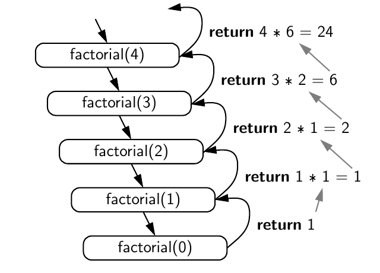
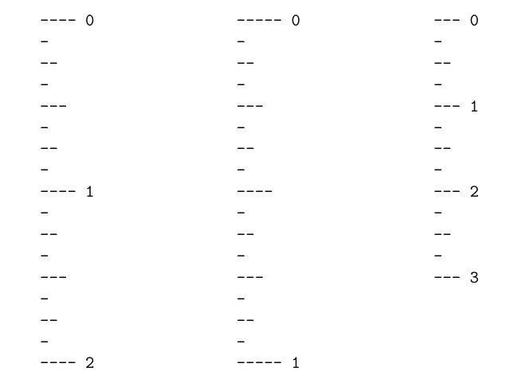
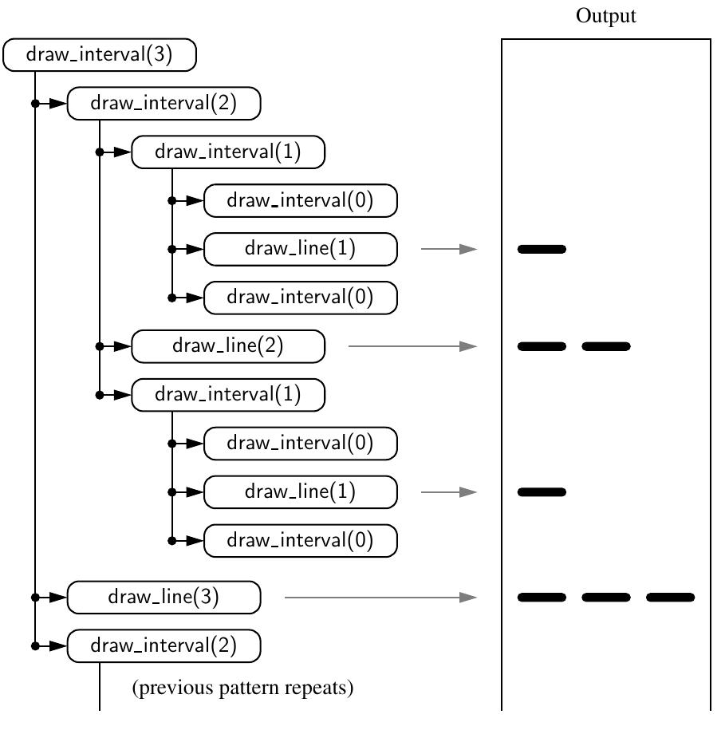
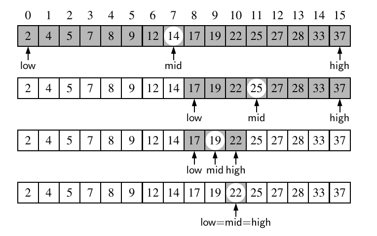
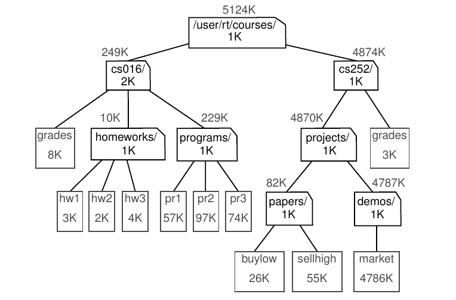
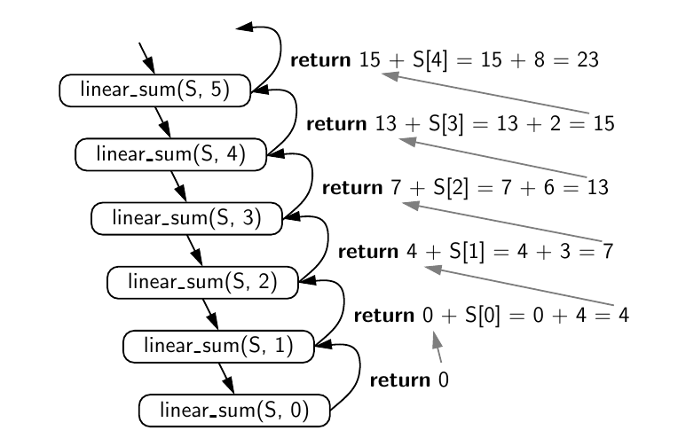

Contents
<ol>
<li><a class="" href="#Recursion">Recursion</a></li>
Recursion
Recursion is a technique by which a function makes one or more calls to itself during execution, or by which a data structure relies upon smaller instances of the very same type of structure in its representation.
We will start by looking at some simple example of recursion.
Some Examples
The Factorial Function
The factorial function can be defined recursively as follows: $$ \begin{cases} 0! = 1 & \text{if} \; n = 0 \ n! = n \times (n-1)! & \text{if} \; n > 0 \end{cases} $$
This definition is typical of many recursive definitions. First, it contains one or more base cases, which are defined nonrecursively in terms of fixed quantities. In this case, \(n = 0\) is the base case. It also contains one or more recursive cases, which are defined by appealing to the definition of the function being defined.
Using this definition, we can write a recursive algorithm to compute the factorial of a number.
def factorial(n):
if n <=1:
return 1
else:
return n * factorial(n-1)
factorial(5)
Here the recursion trace for the factorial function for \(n = 5\):

A recursion trace closely mirrors the programming language’s execution of the recursion. In Python, each time a function (recursive or otherwise) is called, a structure known as an activation record or frame is created to store information about the progress of that invocation of the function. This activation record includes a namespace for storing the function call’s parameters and local variables, and information about which command in the body of the function is currently executing.
When the execution of a function leads to a nested function call, the execution of the former call is suspended and its activation record stores the place in the source code at which the flow of control should continue upon return of the nested call. This process is used both in the standard case of one function calling a different function, or in the recursive case in which a function invokes itself. The key point is that there is a different activation record for each active call.
Drawing an English Ruler
In an english ruler, for each inch, we place a tick with a numeric label. We denote the length of the tick designating a whole inch as the major tick length. Between the marks for whole inches, the ruler contains a series of minor ticks, placed at intervals of 1/2 inch, 1/4 inch, and so on. As the size of the interval decreases by half, the tick length decreases by one.

An interval with a central tick length \(L\ge 1\) is composed of: * An interval with a central tick length \(L − 1\) * A single tick of length \(L\) * An interval with a central tick length \(L − 1\)
Let’s write a recursive function to draw an english ruler.
def draw_line(tick_length, tick_label=""):
line = "-" * tick_length
if tick_label:
line += " " + tick_label
print(line)
def draw_interval(center_length):
if center_length > 0:
draw_interval(center_length - 1)
draw_line(center_length)
draw_interval(center_length - 1)
def draw_ruler(num_inches, major_length):
draw_line(major_length, "0")
for j in range(1, 1 + num_inches):
draw_interval(major_length - 1)
draw_line(major_length, str(j))
draw_interval(4)

def ruler(n):
if n==0:
return
else:
ruler(n-1)
print("-"*n)
ruler(n-1)
ruler(4)
Binary Search
When the sequence is sorted and indexable, for any index j, we know that all the values stored at indices \(0, \ldots , j − 1\)
are less than or equal to the value at index j, and all the values stored at indices
\(j + 1, \ldots , n − 1\) are greater than or equal to that at index j. This observation allows
us to quickly “home in” on a search target using a variant of the children’s game
“high-low.” We call an element of the sequence a candidate if, at the current stage
of the search, we cannot rule out that this item matches the target. The algorithm
maintains two parameters, low and high, such that all the candidate entries have
index at least low and at most high. Initially, low = 0 and high = n − 1. We then
compare the target value to the median candidate, that is, the item data[mid] with
index
$$
\text{mid} = \lfloor\frac{low + high}{2}\rfloor
$$
We consider three cases:
* If the target equals data[mid], then we have found the item we are looking
for, and the search terminates successfully.
* If target < data[mid], then we recur on the first half of the sequence, that is,
on the interval of indices from low to mid − 1.
* If target > data[mid], then we recur on the second half of the sequence, that
is, on the interval of indices from mid + 1 to high.
def binary_search(nums, target, low, high):
if low > high:
return -1
mid = (low + high) // 2
if nums[mid] == target:
return mid
elif nums[mid] > target:
return binary_search(nums, target, low, mid-1)
else:
return binary_search(nums, target, mid+1, high)
nums = [2,4,5,7,9,12,14,17,19,22,25,27,28,33,37]
target = 22
print(binary_search(nums, target, 0, len(nums)-1))

The binary search is a very efficient algorithm for searching a sorted sequence. The time complexity is \(O(\log n)\).
File System
Modern operating systems define file-system directories (which are also sometimes called “folders”) in a recursive way. Namely, a file system consists of a top-level directory, and the contents of this directory consists of files and other directories, which in turn can contain files and other directories, and so on.
Given the recursive nature of the file-system representation, it should not come as a surprise that many common behaviors of an operating system, such as copying a directory or deleting a directory, are implemented with recursive algorithms. In this section, we consider one such algorithm: computing the total disk usage for all files and directories nested within a particular directory.

The cumulative disk space for an entry can be computed with a simple recursive algorithm. It is equal to the immediate disk space used by the entry plus the sum of the cumulative disk space usage of any entries that are stored directly within the entry. For example, the cumulative disk space for cs016 is 249K because it uses 2K itself, 8K cumulatively in grades, 10K cumulatively in homeworks, and 229K cumulatively in programs.
import os
def disc_usage(path):
total = os.path.getsize(path)
if os.path.isdir(path):
for item in os.listdir(path):
total+=(disc_usage(os.path.join(path, item)))
print("{0:<7}".format(total), path)
return total
totals = disc_usage('.')
totals
Some More Examples
Fibonacci Numbers
Fibonaaci numbers are defined recursively as follows: $$ \begin{cases} f(0) = 0 & \text{if} \; n = 0 \ f(1) = 1 & \text{if} \; n = 1 \ f(n) = f(n-1) + f(n-2) & \text{if} \; n > 1 \end{cases} $$
One intuitive way to implement this using recursion is as follows:
def bad_fibonacci(n):
if n<=1:
return n
else:
return bad_fibonacci(n-1) + bad_fibonacci(n-2)
%%timeit
bad_fibonacci(30)
However, the time complexity of this algorithm is \(O(2^n)\), which is not very practical for large \(n\). The same algorithm can be implemented using recursion with time complexity just \(O(n)\):
def good_fibo(n):
if n<=1:
return (1, 0)
else:
a, b = good_fibo(n-1)
return (a+b, a)
%%timeit
good_fibo(30)[0]
Towers of Hanoi
In this game, Y=you are given a set of three pegs and \(n\) disks, with each disk a different size. Let's name the pegs A, B, and C, and let's number the disks from 1, the smallest disk, to \(n\), the largest disk. At the outset, all \(n\) disks are on peg A, in order of decreasing size from bottom to top, so that disk \(n\) is on the bottom and disk 1 is on the top. The goal is to move all nnn disks from one peg to another with constraint that no disk can be placed on top of a larger disk.

The problem can be solved recursively by applying the following algorithm:
def tower_of_hanoi(n, source, dest, temp):
if n == 1:
print('Move disk 1 from {} to {}'.format(source, dest))
return
tower_of_hanoi(n-1, source, temp, dest)
print('Move disk {} from {} to {}'.format(n, source, dest))
tower_of_hanoi(n-1, temp, dest, source)
tower_of_hanoi(4, 'A', 'C', 'B')
Summing a Sequence
We can solve the summation problem using linear recursion by observing that the sum of all n integers in S is trivially 0, if n = 0, and otherwise that it is the sum of the first n − 1 integers in S plus the last element in S.
def linear_sum(S, n):
if n == 0:
return 0
else:
return linear_sum(S, n-1) + S[n-1]
S = [4,3,6,2,8]
linear_sum(S, len(S))

Reversing a Sequence with Recursion
We can solve the problem using linear recursion, by observing that the reversal of a sequence can be achieved by swapping the first and last elements and then recursively reversing the remaining elements.
def linear_sum(S, sum=0):
if not S:
return sum
else:
return linear_sum(S[1:], sum+S[0])
S = [4,3,6,2,8]
linear_sum(S)
def reverse(nums, start, stop):
if start < stop:
nums[start], nums[stop] = nums[stop], nums[start]
reverse(nums, start+1, stop-1)
# return nums
nums = [1,2,3,4,5,6,7,8,9,10]
print(reverse(nums, 0, len(nums)-1))
nums
Note that there are two implicit base case scenarios: Whenstart == stop, the
implicit range is empty, and when start == stop−1, the implicit range has only
one element. In either of these cases, there is no need for action, as a sequence
with zero elements or one element is trivially equal to its reversal. When otherwise
invoking recursion, we are guaranteed to make progress towards a base case, as
the difference, stop−start, decreases by two with each call.
Computing Power
A recursive definition of power function can be given as: $$ \begin{align} f(x,n) &= x^n & \text{if} \; n = 0 \ &= f(x,n-1) * x & \text{if} \; n > 0 \end{align} $$
This definition leads to the following recursive algorithm:
def power(x,n):
if n == 0:
return 1
else:
return x * power(x, n-1)
%%timeit
power(1234,111)
The algorithm runs in \(O(n)\) time, where \(n\) is the size of the input sequence. However, we can so better by using a more efficient algorithm which runs in \(O(\log n)\) time.
Let \(k = \lfloor n/2\rfloor\) denote the
floor of the division (expressed as n // 2 in Python). We consider the expression \((x^k)^2\). When \(n\) is even, \(\lfloor n/2\rfloor = n/2\) and therefore \((x^k)^2 = (x^{n/2})^2=x^n\). When n is odd,
\(\lfloor n/2\rfloor = (n-)/2\) and \((x^k)^2 = (x^{(n-1)/2})^2=x^{n-1}\).
This analysis leads to the following recursive definition:
$$
f(x,n)
\begin{cases}
&= 1 & \text{if} \; n = 0 \
&= xf(x,\lfloor n/2 \rfloor) & \text{if} \; n > 0 \text{ is odd}\
&= f(x,\lfloor n/2 \rfloor) & \text{if} \; n > 0 \text{ is even}
\end{cases}
$$
def power(x, n):
if n==0:
return 1
else:
partial = power(x, n//2)
if n%2 == 0:
return partial * partial
else:
return partial * partial * x
%%timeit
power(1234,111)
Binary Sum
The problem, again is to sum a sequence of numbers. Computing the sum of one or zero elements is trivial. With two or more elements, we can recursively compute the sum of the first half, and the sum of the second half, and add these sums together. Here is the algorithm:
def binary_sum(S, start, stop):
if start>=stop:
return 0
elif start == stop-1:
return S[start]
else:
mid = (start + stop) // 2
return binary_sum(S, start, mid) + binary_sum(S, mid, stop)
S = [4,3,6,2,8]
binary_sum(S, 0, len(S))
The running time of this algorithm is \(O(n)\).
Designing Recursive Algorithm
In general, an algorithm that uses recursion typically has the following form: * Test for base cases We begin by testing for a set of base cases (there should be at least one). These base cases should be defined so that every possible chain of recursive calls will eventually reach a base case, and the handling of each base case should not use recursion. * Recur If not a base case, we perform one or more recursive calls. This recursive step may involve a test that decides which of several possible recursive calls to make. We should define each possible recursive call so that it makes progress towards a base case.
Parameterizing a Recursion
To design a recursive algorithm for a given problem, it is useful to think of the different ways we might define subproblems that have the same general structure as the original problem. If one has difficulty finding the repetitive structure needed to design a recursive algorithm, it is sometimes useful to work out the problem on a few concrete examples to see how the subproblems should be defined.
A successful recursive design sometimes requires that we redefine the original
problem to facilitate similar-looking subproblems. Often, this involved reparameterizing the signature of the function. For example, when performing a binary
search in a sequence, a natural function signature for a caller would appear as
binary_search(data, target). However, later, we defined our function
with calling signature binary_search(data, target, low, high), using the additional
parameters to demarcate sublists as the recursion proceeds. This change in parameterization is critical for binary search. If we had insisted on the cleaner signature,
binary_search(data, target), the only way to invoke a search on half the list would
have been to make a new list instance with only those elements to send as the first
parameter. However, making a copy of half the list would already take \(O(n)\) time,
negating the whole benefit of the binary search algorithm.
Problems
1
Describe a recursive algorithm for finding the maximum element in a sequence, S, of n elements.
Base case: If n = 1, then the maximum element is the only element in the sequence. Return this element.
Recur: If n > 1, then the maximum element is the maximum of the first n−1 elements and the last element.
def find_max(S, n):
if n == 1:
return S[0]
else:
return max(S[n-1], find_max(S, n-1))
S = [4,3,6,2,8, 3]
find_max(S, len(S))
2
Describe a recursive function for converting a string of digits into the integer it represents. For example, 13531 represents the integer 13, 531.
Base case: If the length of string is 0, return 0.
Recur: If the length of string is > 0, then the first character is the digit, and the rest of the string is the rest of the number.
def string_to_digit_recur(s, n):
if n == 0:
return 0
else:
return 10 * string_to_digit_recur(s, n-1) + int(s[n-1])
string_to_digit_recur("123",3)